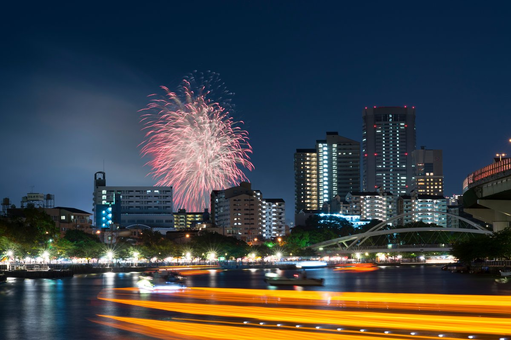
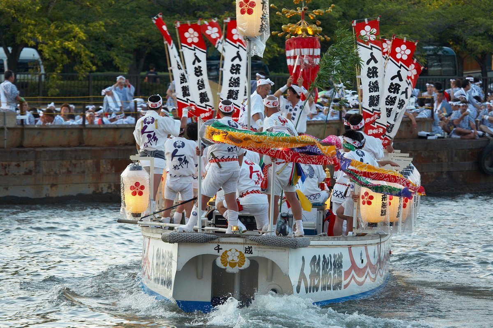
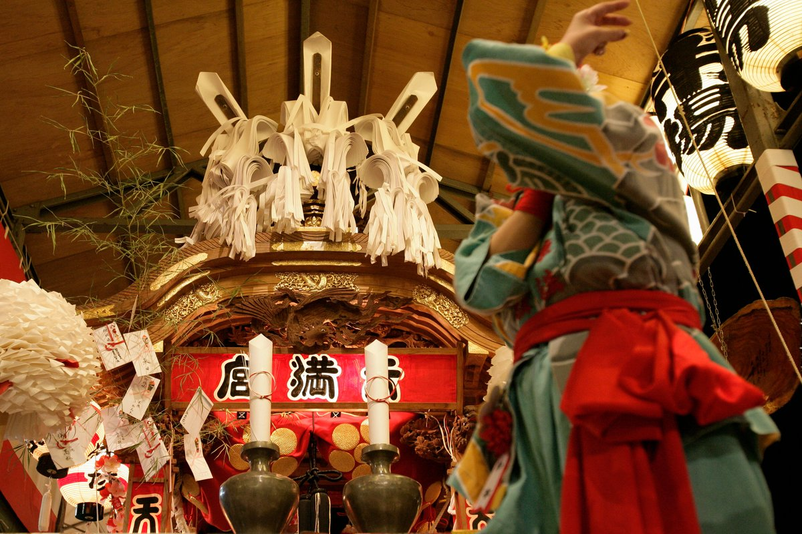

One of Japan's Three Greatest Festivals — On Danke's Doorstep
Each year, on the evenings of July 24 and 25, central Osaka is transformed by the Tenjin Matsuri (天神祭) — a thousand-year-old festival of fire, music, water, and prayer that ranks alongside Kyoto's Gion Matsuri and Tokyo's Kanda Matsuri as one of Japan's three greatest festivals. Originating at Osaka Tenmangu Shrine, the festival's processions and fireworks unfold directly above the Tenjinbashi neighborhood — the same streets where Danke Izakaya is located, just a five-minute walk from the shrine.
For overseas visitors planning a summer trip to Osaka, Tenjin Matsuri is one of the rare cultural events that genuinely deserves the word "unmissable." Over 1.3 million people attend each year, lining the Okawa riverbanks to watch a procession of more than 100 boats drift past beneath an explosion of fireworks. This guide covers everything you need to know — the history, the schedule, the best vantage points, and how to combine the festival with a meal at Danke.
A Festival That Has Run for Over a Thousand Years
Tenjin Matsuri began in the year 951, just two years after Osaka Tenmangu Shrine itself was founded. The festival was created to honor Sugawara no Michizane, the deified scholar enshrined at Tenmangu, and to purify the city through a ritual procession down the river. Originally a relatively quiet religious observance, the festival grew steadily over the centuries into the spectacle it is today, with the riverside fireworks added in the modern era to create the dramatic finale that draws visitors from around the world.
The core idea has remained unchanged for more than a millennium: a sacred mikoshi carrying the spirit of Sugawara no Michizane is paraded out from the shrine through the streets of Osaka, transferred onto a boat, and floated along the Okawa River. The deity travels through the city, blesses the people, and returns to the shrine by midnight. The fireworks, the music, the costumes, and the food stalls have all grown around this fundamentally religious purpose.
The 2026 Schedule: What Happens on July 24 and 25
July 24 — Yoimiya (Eve Festival)
The first day, known as Yoimiya (宵宮), is the quieter of the two but well worth attending. Sacred rituals begin at 7:45 AM with the Hokoryu-Shinji ritual at the Hoko-nagashi-bashi bridge, where a sacred halberd is floated down the river to invite the spirit of Tenjin to descend. Throughout the day, traditional dances, taiko drumming, and the Catalpa Bow purification ritual are performed at the shrine grounds. Food stalls open in the afternoon along the streets surrounding the shrine, and the festive atmosphere builds gradually toward evening.
July 25 — Honmiya (Main Festival)
The main day, Honmiya (本宮), is when the festival reaches its full, spectacular scale. The schedule for July 25 typically follows this order:
- 13:30 — Natsumatsuri Departure Ritual: The deity's spirit is transferred into the portable mikoshi shrine inside Osaka Tenmangu.
- 15:30 — Riku-togyo (Land Procession): Approximately 3,000 participants in traditional attire — including warriors on horseback, courtly figures, drum boats, and dragon dances — march from the shrine through the streets toward Tenjinbashi 1-chome (only minutes from Danke).
- 18:00 — Funa-togyo (Boat Procession): The mikoshi is loaded onto a sacred boat at the Tenjinbashi pier. Over 100 vessels — including dragon boats, drum boats, and decorated viewing boats — depart upstream along the Okawa River, illuminated by lanterns and accompanied by traditional festival music.
- 19:30–21:00 — Hono-Hanabi (Sacred Fireworks): Approximately 4,000 fireworks are launched from two locations along the river, perfectly synchronized with the boat procession passing below. This is the iconic image of Tenjin Matsuri — boats, lanterns, and fireworks reflected in the water at once.
- 22:00 — Return Ritual: The mikoshi returns to Osaka Tenmangu, where the deity is enshrined back into the main hall, completing the festival.

Where to Watch: Best Vantage Points
The festival stretches over a long route, and where you stand makes a huge difference to your experience. Here are the four main options for watching the boat procession and fireworks:
- Sakuranomiya Park (桜之宮公園): The most popular free viewing area, lining both banks of the Okawa River. Arrive by 17:00 to secure a spot on the grass. Best for families and groups.
- Temmabashi Bridge (天満橋) area: A great mid-route vantage point with strong views of both the boats and the fireworks. Often less crowded than Sakuranomiya.
- Riverside paid seating: Reserved seating areas along the Okawa offer guaranteed views and start at around ¥6,000. Tickets sell out by early July, so book in advance via the official Tenjin Matsuri website.
- Boarding a viewing boat: Several companies operate festival viewing cruises with food and drinks included (¥20,000–¥40,000 per person). The most immersive experience, but tickets are extremely competitive.
What to Wear, What to Bring
Yukata: Embracing the Tradition
Many Japanese festival-goers wear yukata — the lightweight cotton summer kimono — to Tenjin Matsuri. Yukata rental shops near Osaka Tenmangu and along Tenjinbashi-suji offer same-day rental services in the ¥3,500–¥8,000 range, including dressing assistance. It is by no means required, but wearing one transforms the experience: you become part of the festival rather than just a spectator.
Practical Items
- A hand fan or folding fan (uchiwa / sensu): Late July in Osaka is hot and humid, often above 30°C even after sunset.
- A small towel (tenugui): For wiping sweat. Easily purchased at festival stalls as a souvenir.
- A bottle of water: Vending machines sell out quickly during the festival.
- Cash: Many food stalls do not accept credit cards. ¥3,000–¥5,000 in small bills is a good amount.
- A portable phone charger: Mobile networks become congested with the crowd, draining batteries faster than usual.
The Food Stalls (Yatai)
The streets surrounding Osaka Tenmangu and along the Okawa fill with hundreds of food stalls during the festival. Classic Tenjin Matsuri street food includes:
- Takoyaki: Osaka's signature octopus balls, served piping hot from cast-iron molds.
- Yakisoba: Stir-fried noodles with cabbage, pork, and a sweet-savory sauce.
- Kakigori: Shaved ice with brightly colored syrup — a summer essential.
- Choco Banana: Whole bananas dipped in chocolate, decorated with sprinkles.
- Ringo Ame: Candy apples — a glossy red toffee shell over a fresh apple.

Combining Tenjin Matsuri with Dinner at Danke
Danke Izakaya sits on Tenjinbashi 1-chome, less than five minutes' walk from Osaka Tenmangu and right at the southern end of the Riku-togyo procession route. This makes the location ideal for festival-goers who want to combine the spectacle with a proper meal — and our charcoal-grilled yakitori is, in many ways, the perfect summer izakaya cuisine to match the festival mood.
Two strategies work well:
- Early dinner, then fireworks (best for first-time visitors): Arrive at Danke when we open at 17:30, enjoy a focused 90-minute course of yakitori and chilled sake, then walk to Sakuranomiya Park to claim a spot for the 19:30 fireworks.
- Watch first, then late dinner: Stake out a riverside spot from late afternoon, watch the boat procession and fireworks, then return to Danke for a relaxed late dinner around 21:00. The crowds dissipate quickly after the final firework, and a cold beer with grilled chicken thigh is a memorable way to close the night.
Important: Danke fills up exceptionally quickly on July 24 and especially July 25. Reservations are essential — please contact us at least one week in advance for festival-night seating.
Getting There During the Festival
Heavy traffic restrictions are imposed in central Osaka on both festival days, with major roads closed to vehicles from afternoon to late evening. Public transport is by far the easiest option:
- JR Osaka-Tenmangu Station (JR Tozai Line) — 2-minute walk to the shrine, 5-minute walk to Danke.
- Minamimorimachi Station (Osaka Metro Tanimachi Line / Sakaisuji Line) — 3-minute walk to the shrine.
- Temmabashi Station (Osaka Metro Tanimachi Line / Keihan Line) — closest to the riverside fireworks viewing areas.
Trains run on extended schedules during the festival, but expect significant crowding on platforms after the fireworks finish around 21:00. If possible, plan to leave the riverside before 22:00 or wait until after 22:30 for the worst of the rush to clear.
A Festival That Connects Centuries
Tenjin Matsuri is rare among major festivals in retaining a deeply religious core while also being one of the most spectacular public events in Japan. The fireworks are unforgettable, but the quieter moments — the early-morning purification rituals at the shrine, the slow progress of a single drum boat down the river, the chant of festival-goers in white robes — are what make this festival genuinely meaningful.
If your visit to Osaka coincides with late July, plan ahead, secure your viewing spot early, and reserve dinner at Danke. We've watched this festival for years from our doorstep, and we'd be honored to be part of your night.
日本三大祭之一——就在だんけ家门口
每年7月24日和25日的夜晚，大阪市中心都会因天神祭（天神祭）而焕然一新——这是一场延续了千年之久的祭典，融合了火、音乐、水与祈祷，与京都的祇园祭、东京的神田祭并列为日本三大祭。祭典发源于大阪天满宫，巡游队伍和烟花就在天神桥街区的上空绽放——也正是だんけ居酒屋所在的街区，距离神社仅5分钟步行路程。
对于计划夏季造访大阪的海外旅客来说，天神祭是真正配得上"不可错过"四个字的稀有文化盛会。每年有超过130万人聚集到大川两岸，观赏100艘以上的船只在烟花的爆发中缓缓驶过。本指南将为您介绍所需的一切——历史、日程、最佳观赏地点，以及如何将祭典与だんけ的晚餐完美结合。
延续千年以上的祭典
天神祭始于公元951年，仅在大阪天满宫创建的两年之后。祭典的设立是为了纪念被尊为神灵的菅原道真——天满宫的主祭神，并通过沿河的仪式巡游来净化整座城市。最初只是一场较为安静的宗教仪式，随着世纪流转，祭典逐渐发展为今日的盛大场面，沿河烟花更是在近代加入，成为吸引全世界游客的震撼终章。
祭典的核心理念千年未变：承载菅原道真神灵的神圣御神舆从神社出发，穿过大阪街头，被搬上船只，沿大川航行。神灵巡游城市，赐福于民，午夜前回归神社。烟花、音乐、服饰和小吃摊位，都是围绕这一根本宗教目的逐步发展起来的。
2026年日程：7月24日和25日的安排
7月24日——宵宫（前夜祭）
第一天称为宵宫（宵宫），相对较为安静，但仍非常值得参加。神圣仪式于上午7:45开始，从鉾流神事仪式开始，在鉾流桥上将神圣的鉾矛流入河中，迎请天神降临。全天还会在神社境内进行传统舞蹈、太鼓表演和梓弓净化仪式。下午开始，神社周边街道上的小吃摊位陆续开张，节日气氛逐渐升温。
7月25日——本宫（正祭）
主祭日本宫（本宫）是祭典达到最盛大、最壮观规模的一天。7月25日的日程通常按以下顺序进行：
- 13:30——夏祭出发仪式：神灵被请入大阪天满宫内的便携式神舆。
- 15:30——陆渡御（陆上巡游）：约3,000名身着传统服饰的参与者——包括马上武士、宫廷人物、太鼓船和龙舞——从神社出发，穿过街道前往天神桥1丁目（距离だんけ仅几分钟）。
- 18:00——船渡御（船上巡游）：神舆在天神桥码头被搬上神圣的船只。100艘以上的船只——包括龙船、太鼓船和装饰华美的观赏船——沿大川向上游出发，灯笼通明，传统祭典音乐悠扬。
- 19:30–21:00——奉纳花火（神圣烟花）：约4,000发烟花从河岸两个地点同时升空，与下方驶过的船队完美同步。这正是天神祭的标志性画面——船只、灯笼、烟花同时映照在水面之上。
- 22:00——还御仪式：神舆回归大阪天满宫，神灵重新安奉于本殿，祭典圆满结束。
在哪里观赏：最佳观景点
祭典路线绵延广阔，所站位置不同，体验也大相径庭。以下是观赏船渡御和烟花的四个主要选择：
- 樱之宫公园（桜之宮公園）：最受欢迎的免费观赏区，沿大川两岸延伸。请于17:00前到达以占据草地上的位置。最适合家庭和团体。
- 天满桥（天満橋）周边：路线中段的绝佳观赏点，可以同时清晰观赏船只和烟花，通常比樱之宫人少一些。
- 河岸付费座席：大川沿岸的预订座位区提供保证视野，价格约6,000日元起。门票通常在7月初售罄，请通过天神祭官方网站提前预订。
- 登上观赏船：多家公司经营祭典观赏游船，含餐饮（每人20,000–40,000日元）。最沉浸式的体验，但门票竞争极为激烈。
穿什么、带什么
浴衣：拥抱传统
许多日本祭典参与者会穿浴衣——轻薄的棉质夏季和服——参加天神祭。大阪天满宫和天神桥筋附近的浴衣租赁店提供当日租借服务，价格约3,500–8,000日元，含穿着协助。虽然并非必须，但穿上浴衣会彻底改变体验：你会成为祭典的一部分，而不只是旁观者。
实用物品
- 团扇或折扇（うちわ／扇子）：大阪7月下旬炎热潮湿，日落后气温常在30°C以上。
- 小毛巾（手ぬぐい）：用于擦汗，可在祭典摊位作为纪念品购买。
- 瓶装水：祭典期间自动售货机经常售罄。
- 现金：许多小吃摊不接受信用卡。准备3,000–5,000日元小面额现金为佳。
- 便携充电宝：移动网络因人潮拥塞，电量消耗较平时更快。
小吃摊位（屋台）
祭典期间，大阪天满宫周围和大川沿岸的街道布满了数百个小吃摊。经典的天神祭街头美食包括：
- 章鱼烧：大阪标志性小吃，从铸铁模具中烫手出炉。
- 炒面：包含卷心菜、猪肉，配上甜咸酱汁的拌炒面条。
- 刨冰：淋上鲜艳糖浆的刨冰——夏日必备。
- 巧克力香蕉：整根香蕉蘸巧克力，撒上彩色糖珠。
- 苹果糖：新鲜苹果裹上一层光亮的红色焦糖外衣。
将天神祭与だんけ的晚餐完美结合
だんけ居酒屋位于天神桥1丁目，距离大阪天满宫步行不到5分钟，正好位于陆渡御巡游路线的南端。这一位置使其成为祭典参与者结合盛会与正餐的理想场所——而我们的炭火烤鸡串，从许多方面来说，正是与祭典氛围完美契合的夏季居酒屋美食。
两种策略均效果不错：
- 提前用餐，再赏烟花（最适合首次参加者）：17:30 だんけ开店后立即到达，享受90分钟集中的烤鸡串和冰镇清酒，然后步行至樱之宫公园，为19:30的烟花占据观赏位。
- 先观赏，再晚餐：傍晚就到河岸占好位置，观赏船渡御和烟花，再于21:00左右回到だんけ享用悠闲的晚餐。最后一发烟花结束后，人潮迅速散去，一杯冰啤酒配上烤鸡腿，是难忘的收尾。
重要提示：7月24日，尤其是7月25日，だんけ的座位会异常迅速地坐满。预约必不可少——祭典之夜的座位请至少提前一周联系我们。
祭典期间的交通
祭典两天，大阪市中心实施严格的交通管制，主要道路从下午到深夜禁止车辆通行。公共交通是最便利的选择：
- JR大阪天满宫站（JR东西线）——步行2分钟到神社，5分钟到だんけ。
- 南森町站（大阪地铁谷町线／堺筋线）——步行3分钟到神社。
- 天满桥站（大阪地铁谷町线／京阪线）——最靠近河岸烟花观赏区。
祭典期间列车运行延长，但烟花结束后约21:00，站台拥挤情况会非常严重。如可能，建议在22:00前离开河岸，或等到22:30后再行动以避开高峰。
跨越世纪的祭典
天神祭在日本主要祭典中独具特色，至今保留着深厚的宗教内核，同时又是日本最壮观的公共活动之一。烟花令人难忘，但更安静的时刻——清晨神社的净化仪式、单艘太鼓船在河上的缓慢前行、白衣信徒的吟唱——才是这一祭典真正的意义所在。
如果您的大阪之行恰逢7月下旬，请提前计划、尽早确定观赏位置，并预订だんけ的晚餐。我们多年来从店门口注视着这一祭典，能成为您夜晚的一部分将是我们的荣幸。
일본 3대 축제 중 하나 — だんけ 바로 옆에서
매년 7월 24일과 25일 저녁, 오사카 도심은 텐진 마쓰리(天神祭)로 변모합니다 — 천 년이 넘는 역사를 가진 불, 음악, 물, 그리고 기도의 축제로, 교토의 기온 마쓰리, 도쿄의 간다 마쓰리와 함께 일본 3대 축제로 꼽힙니다. 오사카 덴만구 신사에서 시작되는 이 축제의 행렬과 불꽃놀이는 텐진바시 동네 — だんけ 이자카야가 위치한 바로 그 거리, 신사에서 도보 5분 거리에서 펼쳐집니다.
여름에 오사카를 방문할 계획이 있는 해외 여행객에게 텐진 마쓰리는 진정 "놓쳐서는 안 될"이라는 말이 어울리는 드문 문화 행사입니다. 매년 130만 명 이상이 오카와 강변을 가득 메우고, 100척이 넘는 배들이 불꽃놀이 아래로 천천히 지나가는 광경을 지켜봅니다. 이 가이드는 알아야 할 모든 것을 다룹니다 — 역사, 일정, 최고의 관람 장소, 그리고 だんけ 식사와 결합하는 방법입니다.
천 년 이상 이어진 축제
텐진 마쓰리는 951년에 시작되었으며, 이는 오사카 덴만구 신사가 창건된 지 불과 2년 후의 일입니다. 이 축제는 신격화되어 덴만구에 모셔진 학자 스가와라노 미치자네를 기리고, 강을 따라 펼쳐지는 의식 행렬을 통해 도시를 정화하기 위해 창설되었습니다. 본래는 비교적 조용한 종교 의식이었으나, 수 세기에 걸쳐 점차 오늘날의 장관으로 발전했고, 강변 불꽃놀이는 근대에 추가되어 전 세계 방문객을 끌어모으는 극적인 피날레가 되었습니다.
핵심 이념은 천 년 이상 변함이 없습니다: 스가와라노 미치자네의 영혼을 모신 신성한 미코시가 신사에서 출발하여 오사카 거리를 행진하고, 배에 옮겨져 오카와 강을 따라 흐릅니다. 신은 도시를 순회하며 사람들에게 축복을 내리고, 자정 전에 신사로 돌아옵니다. 불꽃놀이, 음악, 의상, 음식 노점은 모두 이 근본적인 종교적 목적을 중심으로 발전해 왔습니다.
2026년 일정: 7월 24일과 25일에 일어나는 일
7월 24일 — 요이미야(전야제)
첫째 날은 요이미야(宵宮)라 불리며, 둘째 날에 비해 조용하지만 충분히 참여할 가치가 있습니다. 신성한 의식은 오전 7:45 호코나가시 다리에서 호코류 신지 의식으로 시작됩니다. 이 의식에서는 신성한 호코(창)를 강에 띄워 텐진의 신령을 맞이합니다. 종일 신사 경내에서는 전통 무용, 다이코 북 연주, 카타르파 활 정화 의식이 거행됩니다. 오후가 되면 신사 주변 거리에 음식 노점이 문을 열고, 축제 분위기가 점차 저녁을 향해 고조됩니다.
7월 25일 — 혼미야(본 축제)
본 축제일 혼미야(本宮)는 축제가 최대 규모로 펼쳐지는 날입니다. 7월 25일 일정은 일반적으로 다음과 같이 진행됩니다:
- 13:30 — 나쓰마쓰리 출발 의식: 오사카 덴만구 내에서 신령이 이동식 미코시로 옮겨집니다.
- 15:30 — 리쿠토교(육상 행렬): 전통 의상을 입은 약 3,000명의 참가자 — 말 탄 무사, 궁중 인물, 북치는 배, 용춤 — 가 신사에서 출발해 텐진바시 1초메(だんけ에서 몇 분 거리)까지 거리를 행진합니다.
- 18:00 — 후나토교(선상 행렬): 미코시는 텐진바시 선착장에서 신성한 배에 실립니다. 100척이 넘는 선박 — 용선, 북배, 화려하게 장식된 관람선 — 이 등불을 밝히고 전통 축제 음악과 함께 오카와 강 상류로 출항합니다.
- 19:30–21:00 — 호노 하나비(봉납 불꽃놀이): 약 4,000발의 불꽃이 강변 두 곳에서 동시에 발사되며, 그 아래를 지나가는 선박 행렬과 완벽히 동기화됩니다. 이것이 텐진 마쓰리의 상징적인 장면 — 배, 등불, 불꽃이 동시에 수면 위에 비치는 순간입니다.
- 22:00 — 환궁 의식: 미코시는 오사카 덴만구로 돌아오고, 신령은 본전에 다시 모셔지며 축제가 막을 내립니다.
어디서 볼까: 최고의 관람 장소
축제는 긴 경로에 걸쳐 펼쳐지므로, 어디에 서느냐에 따라 경험이 크게 달라집니다. 선상 행렬과 불꽃놀이를 관람하는 네 가지 주요 옵션입니다:
- 사쿠라노미야 공원(桜之宮公園): 가장 인기 있는 무료 관람 구역으로, 오카와 강 양안에 펼쳐져 있습니다. 잔디밭의 자리를 잡으려면 17:00까지 도착하세요. 가족 및 단체에 가장 적합합니다.
- 덴마바시(天満橋) 일대: 경로 중간의 훌륭한 관람 지점으로, 선박과 불꽃을 모두 잘 볼 수 있습니다. 사쿠라노미야보다 덜 붐비는 경우가 많습니다.
- 강변 유료 좌석: 오카와 강변 예약 좌석 구역은 보장된 관람 시야를 제공하며, 6,000엔부터 시작됩니다. 티켓은 7월 초까지 매진되므로 텐진 마쓰리 공식 웹사이트에서 미리 예약하세요.
- 관람선 탑승: 여러 회사가 음식과 음료가 포함된 축제 관람 크루즈를 운영합니다(1인당 20,000–40,000엔). 가장 몰입감 있는 경험이지만 티켓 경쟁이 매우 치열합니다.
무엇을 입고, 무엇을 가져갈까
유카타: 전통을 받아들이기
많은 일본인 축제 참가자들이 유카타 — 가벼운 면 소재의 여름 기모노 — 를 입고 텐진 마쓰리에 참여합니다. 오사카 덴만구와 텐진바시스지 인근의 유카타 대여점에서 당일 대여 서비스를 제공하며, 가격은 입혀주기 도움 포함 3,500–8,000엔 수준입니다. 필수는 아니지만 유카타를 입으면 경험이 완전히 달라집니다: 단순한 관람객이 아니라 축제의 일부가 됩니다.
실용 아이템
- 부채(우치와 / 센스): 7월 하순 오사카는 덥고 습하며, 일몰 후에도 30°C를 넘는 경우가 많습니다.
- 작은 수건(테누구이): 땀을 닦는 용도. 축제 노점에서 기념품으로도 쉽게 살 수 있습니다.
- 물 한 병: 축제 기간 자판기는 빠르게 매진됩니다.
- 현금: 많은 음식 노점이 신용카드를 받지 않습니다. 소액권 3,000–5,000엔 정도가 적당합니다.
- 휴대용 충전기: 인파로 모바일 네트워크가 혼잡해져 평소보다 배터리가 빨리 닳습니다.
음식 노점(야타이)
축제 기간 오사카 덴만구 주변과 오카와 강변 거리에 수백 개의 음식 노점이 들어섭니다. 텐진 마쓰리의 대표적인 길거리 음식은 다음과 같습니다:
- 다코야키: 주철 틀에서 갓 구워낸 오사카의 시그니처 문어 볼.
- 야키소바: 양배추, 돼지고기, 달콤 짭짤한 소스를 곁들인 볶음면.
- 가키고리: 화려한 색의 시럽을 뿌린 빙수 — 여름 필수품.
- 초코 바나나: 통째로 초콜릿에 담근 바나나에 형형색색의 토핑을 뿌립니다.
- 링고 아메: 신선한 사과 위에 반짝이는 빨간 사탕 옷을 입힌 사과 사탕.
텐진 마쓰리와 だんけ 저녁 식사를 결합하기
だんけ 이자카야는 텐진바시 1초메에 위치하며, 오사카 덴만구에서 도보 5분 미만, 리쿠토교 행렬 경로의 남쪽 끝에 자리합니다. 이 위치는 축제와 정찬을 함께 즐기고자 하는 방문객에게 이상적입니다 — 그리고 저희의 숯불 야키토리는 여러 면에서 축제 분위기와 완벽하게 어울리는 여름 이자카야 요리입니다.
두 가지 전략이 효과적입니다:
- 이른 저녁, 그 후 불꽃놀이(첫 방문자에게 최적): だんけ 영업 시작 시간인 17:30에 도착해 야키토리와 차가운 사케로 90분간 집중적인 식사를 즐긴 후, 19:30 불꽃놀이를 위해 사쿠라노미야 공원으로 이동합니다.
- 먼저 관람, 그 후 늦은 저녁: 늦은 오후부터 강변 자리를 잡고 선상 행렬과 불꽃놀이를 관람한 뒤, 21:00경 だんけ로 돌아와 여유로운 저녁을 즐깁니다. 마지막 불꽃이 끝나면 인파는 빠르게 흩어지고, 차가운 맥주와 닭다리 야키토리는 그 밤을 잊지 못할 마무리로 만듭니다.
중요: 7월 24일, 특히 25일에 だんけ는 매우 빠르게 만석이 됩니다. 예약은 필수입니다 — 축제 당일 좌석은 최소 일주일 전에 연락 부탁드립니다.
축제 기간 교통편
축제 양일간 오사카 도심에는 강력한 교통 통제가 시행되며, 주요 도로는 오후부터 늦은 밤까지 차량 통행이 금지됩니다. 대중교통이 단연 가장 편리한 선택입니다:
- JR 오사카텐만구역(JR 도자이선) — 신사까지 도보 2분, だんけ까지 도보 5분.
- 미나미모리마치역(오사카 메트로 타니마치선 / 사카이스지선) — 신사까지 도보 3분.
- 덴마바시역(오사카 메트로 타니마치선 / 게이한선) — 강변 불꽃놀이 관람 구역과 가장 가깝습니다.
축제 기간 열차는 연장 운행되지만, 21:00경 불꽃놀이 종료 후 승강장은 매우 혼잡합니다. 가능하다면 22:00 이전에 강변에서 떠나거나, 22:30 이후 혼잡이 어느 정도 해소될 때까지 기다리는 것이 좋습니다.
세기를 잇는 축제
텐진 마쓰리는 일본의 주요 축제 중에서도 깊은 종교적 본질을 유지하면서 동시에 가장 장관을 이루는 공공 행사 중 하나라는 점에서 독특합니다. 불꽃놀이는 잊을 수 없지만, 더 조용한 순간들 — 신사의 이른 아침 정화 의식, 오카와 강을 천천히 나아가는 단 한 척의 북배, 흰 옷을 입은 참배객들의 합창 — 이야말로 이 축제를 진정으로 의미 있게 만드는 것입니다.
오사카 방문이 7월 하순에 걸친다면, 미리 계획을 세우고, 일찍 관람 자리를 확보하고, だんけ에서 저녁을 예약하세요. 저희는 가게 문 앞에서 수년간 이 축제를 지켜봐 왔으며, 여러분의 밤의 일부가 되는 것을 영광으로 여길 것입니다.